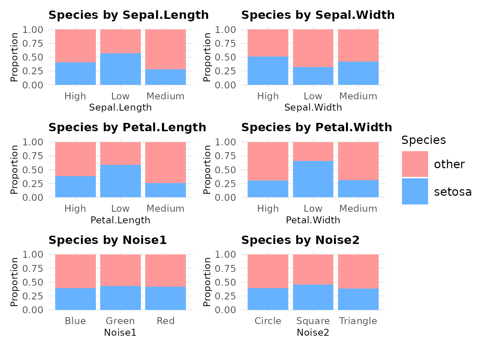

predictdiabetes Vignette: Classification with Iris Dataset
predictdiabetes-vignette.RmdIntroduction
The predictdiabetes package provides tools for binary classification tasks, including: - Exploratory Data Analysis (EDA): Visualizations and statistical tests - Feature Selection: Identifying important predictors - Modeling: Logistic regression pipeline with automated tuning
This vignette demonstrates the workflow using the iris dataset, where we: 1.Convert Sepal.Length, Sepal.Width, Petal.Length, and Petal.Width into categorical predictors, and add some noise into the dataset (Noise1 and Noise2) so we won’t have perfect metrics (since our dataset is quite small). 2. Use Species as a binary target (setosa vs. others)
Data Preparation
Firstly, we modified the original iris dataset behind the scenes: we transformed the numeric predictors into categorical values and added some noise to make the task more challenging. Additionally, we introduced synthetic data to increase the sample size.
Lets get a glipse of the processed iris dataframe.
# head of the transformed iris dataset we will play with that has also been upsampled.
head(iris_processed, n = 5)
#> Sepal.Length Sepal.Width Petal.Length Petal.Width Species Noise1 Noise2
#> 1 Low Medium Low Low setosa Blue Circle
#> 2 Low Medium Low Low setosa Blue Triangle
#> 3 Low Medium Low Low setosa Blue Square
#> 4 Low Medium Low Low setosa Green Circle
#> 5 Low Medium Low Low setosa Blue TriangleNext, lets split the dataframe into training and test set.
# Split into training (75%) and testing (25%) sets
set.seed(123)
split <- initial_split(iris_processed, prop = 0.75, strata = "Species")
train_data <- training(split)
test_data <- testing(split)
head(train_data, n = 3)
#> Sepal.Length Sepal.Width Petal.Length Petal.Width Species Noise1 Noise2
#> 1 High Medium Medium Medium other Red Triangle
#> 2 Low Low Medium Medium other Red Square
#> 3 Medium Low Medium Medium other Green TriangleExploratory Data Analysis (EDA)
1. Target Variable Distribution
Check the distribution of the binary target variable (Species) using
category_target() to assess any class imbalance.
category_target(train_data, Species)
#> # A tibble: 2 × 3
#> Species Count Proportion
#> <fct> <int> <dbl>
#> 1 other 220 0.588
#> 2 setosa 154 0.412Interpretation: We will use the rule of thumb that a dataset is considered imbalanced when the minority class represents less than 10–20% of the data. Based on this, our dataset is only slightly imbalanced (45% Setosa, 54% other). We will proceed with this slightly imbalanced dataset without applying any balancing techniques.
2. NA Summary
Use na_count_type() to identify missing values and data
types.
na_count_type(train_data)
#> Sepal.Length Sepal.Width Petal.Length Petal.Width Species
#> NA_Count "0" "0" "0" "0" "0"
#> Distinct_Count "3" "3" "3" "3" "2"
#> Current_Data_Type "integer" "integer" "integer" "integer" "integer"
#> Noise1 Noise2
#> NA_Count "0" "0"
#> Distinct_Count "3" "3"
#> Current_Data_Type "integer" "integer"Interpretation: No missing values detected for all columns. Yay! No need to drop any rows.
3. Bar Plots of Predictors vs. Target
categorical_bars() and plot_grid() together
makes it easy to visualize the relationship between the predictor to
it’s target variable. In this case, species is our
target.
# this create a list of bar_plots
bar_plots <- categorical_bars(
data_frame = train_data,
cat_vars = c("Sepal.Length", "Sepal.Width", "Petal.Length", "Petal.Width", "Noise1", "Noise2"),
target_col = "Species",
title_size = 12,
axis_size = 10
)
# Display plots in a 2x2 grid
plots_grid(bar_plots, num_cols = 2)
Key Insight: Petal.Length and Petal.Width has a better separation between classes (potential strong predictors) compare to other variables.
4. Statistical Association Tests
Use cramer_chi_results() to compute Cramér’s V and
chi-squared p-values to quantify predictor-target relationships
cramer_chi_results(
df = train_data,
categorical_vars = c("Sepal.Length", "Sepal.Width", "Petal.Length", "Petal.Width", "Noise1", "Noise2"),
target_col = "Species"
)
#> # A tibble: 6 × 7
#> Variable Statistic DF p_value Expected_Min Expected_Max CramersV
#> <chr> <dbl> <int> <dbl> <dbl> <dbl> <dbl>
#> 1 Petal.Width 39.5 2 0.00000000261 46.5 77.6 0.325
#> 2 Petal.Length 29.7 2 0.000000356 45.3 78.2 0.282
#> 3 Sepal.Length 24.1 2 0.00000590 38.3 90 0.254
#> 4 Sepal.Width 8.33 2 0.0155 42.8 88.8 0.149
#> 5 Noise2 1.46 2 0.482 45.7 78.2 0.0625
#> 6 Noise1 0.419 2 0.811 44.5 81.2 0.0335Key insight: The results indicate that Petal.Length and Sepal.Width have statistically significant associations with the target variable, suggesting they are valuable predictors for classification. On the other hand, Noise1 and Noise2 show weak associations, making them less useful for predicting the target.
5. Feature Importance via Information Gain
Identify the most informative predictors using
info_gain().
# Compute information gain with respect to 'am'
info_gain(train_data, Species ~ Sepal.Length + Sepal.Width + Petal.Length + Petal.Width + Noise1 + Noise2)
#> Variable Information_Gain
#> 1 Petal.Width 0.0527502547
#> 2 Petal.Length 0.0402172941
#> 3 Sepal.Length 0.0325058489
#> 4 Sepal.Width 0.0112076589
#> 5 Noise2 0.0019446700
#> 6 Noise1 0.0005608722Key insight: The information gain values show that Petal.Width provides the most information for predicting the target variable. Noise2 contributes very little to the prediction task, suggesting it should be dropped from the model.
# drop Noise2 as it contribute to the model very little
train_data <- train_data %>%
select(-Noise2)Modeling
Logistic Regression Pipeline
We use the lr_pipeline() function automates logistic
regression training, tuning, and model saving.
model_workflow <- lr_pipeline(
data = train_data,
target_col = "Species",
vfolds = 2,
grid_size = 1,
tuning_metric = "recall",
output_path = tempfile(fileext = ".rds") # this is a temporary path, in an actual project, use the actual path
)LASSO Classification Model Coefficients
Visualize the coefficients of the logistic regression model using
coeff_plot()
coeff_plot(model_workflow)Interpretation: We can see that Petal.Width_Low and Petal.Length_Medium have the largest coefficients—positive and negative, respectively.
Evaluation on Test Set
Generate predictions and probabilities on the test set:
lasso_modelOutputs <- test_data %>%
mutate(across(everything(), as.factor)) %>%
cbind(model_workflow %>% predict(test_data),
model_workflow %>% predict(test_data, type = "prob")) %>%
mutate(Species = as.factor(Species))
head(lasso_modelOutputs)
#> Sepal.Length Sepal.Width Petal.Length Petal.Width Species Noise1 Noise2
#> 1 Low Medium Low Low setosa Blue Circle
#> 2 Low Medium Low Low setosa Green Triangle
#> 3 Low Medium Low Low setosa Green Triangle
#> 4 Low High Low Low setosa Blue Circle
#> 5 Low Medium Low Low setosa Red Triangle
#> 6 Low Medium Low Low setosa Blue Square
#> .pred_class .pred_other .pred_setosa
#> 1 setosa 0.2583379 0.7416621
#> 2 setosa 0.2247421 0.7752579
#> 3 setosa 0.2247421 0.7752579
#> 4 setosa 0.2129364 0.7870636
#> 5 setosa 0.2583379 0.7416621
#> 6 setosa 0.2583379 0.7416621Performance Metrics
Calculate ROC AUC to evaluate model performance and plot the ROC
curve using roc_plot()
# Calculate roc metrics
roc_metric <- roc_auc(
lasso_modelOutputs,
truth = Species,
.pred_setosa,
event_level = "second"
)
plot_path1 <- tempfile(fileext = ".png")
roc_plot <- roc_plot(model_outputs = lasso_modelOutputs,
true_class = "Species",
predicted_probs = ".pred_setosa",
roc_auc_value = roc_metric$.estimate,
output_path = plot_path1)Interpretation: We can see from the plot that our model achieved an AUC of 0.745, which is fairly modest. This result is expected since we intentionally added noise to the dataset and the dataset is still relatively small.
Confusion Matrix
Plot the confusion matrix using cm_plot() assess model
performance:
# Confusion matrix
plot_path2 <- tempfile(fileext = ".png")
cm_df <- conf_mat(lasso_modelOutputs, truth = Species, estimate = .pred_class, event_level = "second")$table |>
as.data.frame() %>%
cm_plot(plot_path2)Interpretation: The confusion matrix shows that the model correctly classified 26 setosa and 60 other samples, but also misclassified 26 setosa as other and 14 other as setosa. This indicates that the model struggles with distinguishing setosa from other, particularly overpredicting the other class.
Conclusion
The predictdiabetes package simplifies key steps in
binary classification, from EDA and preprocessing to model training and
evaluation. This vignette demonstrates its capabilities using the Iris
dataset, but the package can be extended to real-world classification
tasks like diabetes prediction.